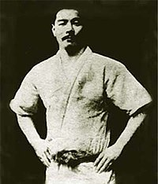

Основатель джиу-джитсу 🥋
{kind=link}
Хиносита Торитэ Кайсан Такэноути-рю является одним из старейших дзюдзюцу корю в Японии.
Он был основан в 1532 году, в первый год Тенбуна, двадцать четвертого числа шестого лунного месяца Такэноути Тюнагон Дайдзе Накацукасадаю Хисамори, правителем замка Итиносэ в Сакусю. Несмотря на то, что Такэноути Рю славится своими дзюдзюцу, на самом деле это полноценное боевое искусство, включающее вооруженный грэпплинг (ерой кумиути), посох (бодзюцу), меч (кэндзюцу), рисование мечом (иайдзюцу), глефу (нагинатадзюцу), железный веер (тэссендзюцу), удерживающую веревку (ходзюдзюцу) и техники реанимации (саккацухо ). Его техники дзюдзюцу оказали влияние на основание многих других школ в Японии. Такеноути-рю до сих пор активно передается членами семьи Такеноути, а также другими группами как внутри Японии, так и за ее пределами. Вместе с Есин-рю (楊心心) и Рей Синто-рю, Такеноути-рю (竹内流) была одной из трех крупнейших, наиболее важных и влиятельных школ дзюдзюцу периода Эдо ( _BOS_戸時代 Эдо дзидай 1603 - 1868) до расцвета дзюдо.[1]
Джиу-джитсу – это название серии японских боевых искусств, которые включают в себя технику работы с и без оружия. Джиу-джитсу – это искусство рукопашного боя, в основе которого лежит принцип «мягкой» и «податливой» техники движения. Джиу-джитсу является одной из наиболее древних видов японской борьбы. -